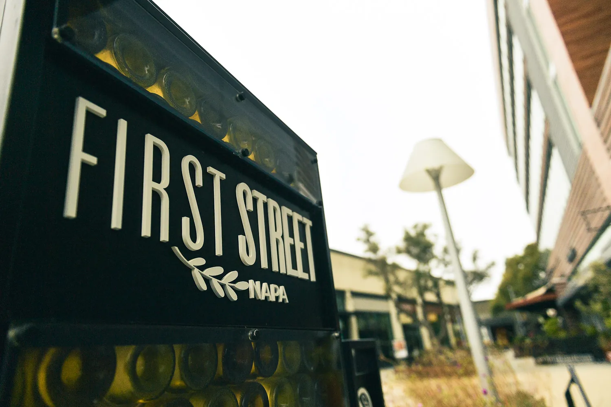

What a website has to do now that it didn't have to do in 2019

A website used to have one job, which was to convince the person looking at it. It now has two. The second reader is a machine that takes your site along with everything else it can find, writes a paragraph about you, and hands that paragraph to someone who may never open the page. Most sites are still built entirely for the first reader, which is why they are invisible to the second.
The second audience
In 2019 a website was a destination. Someone searched, clicked, landed, and decided. Every decision about the site was a decision about that visit.
A measurable share of the deciding now happens before the click. Pew Research Center tracked the actual browsing of 900 US adults through March 2025, covering 68,879 Google searches. Where a search produced an AI summary, people clicked a result in 8% of visits. Where it did not, they clicked in 15%. They clicked a link inside the summary itself in 1% of visits, and they ended the session entirely 26% of the time against 16%.
Read that carefully, because it is narrower than the headline it usually becomes. It is US adults, one month, and Google’s summaries rather than AI assistants generally. What it establishes is not that search is finished. It is that when a summary answers the question, the page that fed the summary usually does not get the visit. Your work is being read. You are not.
That does not make the human visitor less important. It adds a second reader with different needs, one that cannot see, cannot infer from a photograph, and will not open an accordion to find out what you charge.
Four things that changed
Facts have to be text. The best-looking services page in your category is worth nothing to the second reader if the services sit inside a graphic. Services, prices where you publish them, hours, area served, credentials: all of it has to be selectable text. If you cannot drag your cursor across it, nothing can quote it.
The page has to be complete when it arrives. This is the one that catches good sites, and it is worth being precise about. In December 2024 Vercel and MERJ examined crawler behaviour across their network and found that none of the major AI crawlers execute JavaScript. That list covers OpenAI’s GPTBot, OAI-SearchBot and ChatGPT-User, Anthropic’s ClaudeBot, Meta-ExternalAgent, ByteDance’s Bytespider and PerplexityBot. They will happily download your script files. GPTBot fetched JavaScript in 11.50% of its requests and Claude in 23.84%, and neither ran a line of it.
Two honest caveats, because this finding gets repeated with numbers that are not in it. The study does not publish a sample size, and it does not quantify how much of a given page goes unseen. What it does establish is the mechanism: Googlebot renders JavaScript, the AI crawlers do not, and anything your page assembles after load exists for one of those audiences and not the other.
Questions beat claims. Award-winning care cannot be quoted by anything, because it is an opinion and every competitor holds the same one. We see patients from 7am, and the first consultation is not charged, can be quoted, because it answers something a person actually asked. Answers get lifted into summaries. Adjectives get dropped on the way.
The site has to agree with everything else. Your site is now one source among many. Its most valuable job is corroborating the others rather than contradicting them, because a machine that finds two versions of your opening hours does not average them. It reaches for a business it can describe without hedging.
What has not changed
Nearly everything else, and it is worth saying plainly, because the industry has an interest in implying that the ground moved further than it did.
Speed still matters, and it matters most on a three-year-old phone on hotel wifi rather than on the machine the site was designed on. A single clear path to one action still converts better than five competing ones. Photographs of the actual room still outperform stock. Trust is still built out of specifics, and it is still lost the same way it always was, by being vague about something the reader wanted to know.
The second reader is an addition, not a replacement. A site that reads beautifully to a machine and loses the human being has failed at the older and more important job. The two are rarely in tension: the things that make a page quotable are mostly the things that made it clear in the first place.
What this looks like in practice
It looks unremarkable, which is rather the point. A services page that names its services in text, with the prices beside them. A contact page whose address matches every other place that address appears, down to the abbreviation. A page for each real question, answered in the words the question was asked in. Structured data that repeats what the page already says instead of claiming something it does not.
You can check the whole of it in about ten minutes. Disable JavaScript and reload: what survives is close to what an AI crawler reads. Then try selecting the sentences that carry your most important facts. Anything you cannot highlight, nothing can cite.
None of that is exotic, and in most cases none of it needs a rebuild. What it needs is the decision that the second reader exists, followed by the ordinary discipline of writing things down.
Key points
- The page is increasingly used as a source, not visited as a destination.
- Facts have to be selectable text, not baked into images or loaded by script.
- Answers get quoted into summaries; adjectives get discarded.
- Your site's most valuable job is corroborating your other sources.
- The second audience is an addition. A site that fails the human has still failed.
Questions people ask
Is my website still worth having if AI answers the question?
It is worth more, in a different way. It is the only source you fully control and the one an AI assistant checks to confirm what others claim. What has changed is that it also has to be readable by something that cannot see.
Do I need to rebuild my site for AI?
Usually not. Most of the gap is content that is not text, substance that loads too late, and pages that contradict your listings. Those are fixes, not rebuilds.
Should I publish prices?
If you can, yes — prices as literal text are one of the strongest signals a service business can publish. If your pricing genuinely depends on scope, publish the range or the method, not silence.
How do I know if my site is readable by a machine?
Load it with JavaScript disabled and see what survives, then try selecting the text of your most important facts. If you cannot select it, nothing else can read it.
Reptify Media · Journal
https://reptifymedia.com/journal/what-a-website-has-to-do-now.html
Published